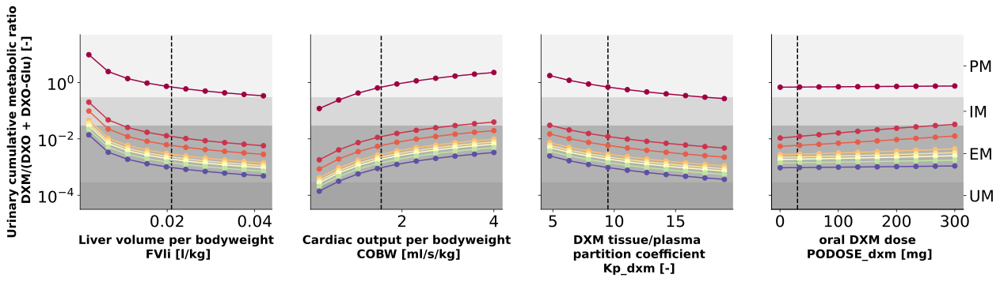

Overview
Models
| model | source |
|---|---|
| model | dextromethorphan_body_flat.xml |
Datasets
The experiment has no datasets.
Figures (1)


Code
"""Sensitivity of the urinary metabolic ratio to physiological parameters and the dose.
The figure is drawn with the matplotlib style of the manuscript (`MPL_STYLE`),
which is applied to this figure only and does not change the global settings.
"""
from collections.abc import Sequence
from typing import ClassVar, override
import matplotlib as mpl
import numpy as np
from matplotlib.axes import Axes
from pkpdsim.scan import scan_dimensions
from sbmlsim import Q
from sbmlsim.plot.serialization_matplotlib import FigureMPL
from sbmlsim.result import ScanResult
from sbmlsim.simulation import Dimension, Scan, Simulation
from scipy.stats.mstats import gmean
from pkdb_models.models.dextromethorphan import MODEL
from pkdb_models.models.dextromethorphan.experiments.base_experiment import (
DexSimulationExperiment,
)
from pkdb_models.models.dextromethorphan.experiments.genotype_phenotype import (
GenotypeStyle,
)
from pkdb_models.models.dextromethorphan.models.fits import FITS
from pkdb_models.models.dextromethorphan.utils_plotting import (
MPL_STYLE,
keep_tick_label_sizes,
)
ACTIVITY_SCORES = [0.00, 0.25, 0.5, 1.0, 1.25, 1.5, 2.0, 3.0]
PM_COLOR = (243 / 256, 243 / 256, 243 / 256, 1)
IM_COLOR = (217 / 256, 217 / 256, 217 / 256, 1)
EM_COLOR = (179 / 256, 179 / 256, 179 / 256, 1)
UM_COLOR = (166 / 256, 166 / 256, 166 / 256, 1)
def plot_metabolic_areas(axes: Sequence[Axes]) -> None:
"""Shade the ranges of the metabolic ratio of the metabolic phenotypes.
The phenotypes (UM, EM, IM, PM) label a second y-axis of the last plot.
"""
for n in range(len(axes)):
axes[n].grid(False)
y_bottom, y_top = 10**-4.5, 50
axes[n].axhspan(
y_top,
0.03,
color=PM_COLOR,
linewidth=0,
)
axes[n].axhspan(
0.03,
0.3,
color=IM_COLOR,
linewidth=0,
)
axes[n].axhspan(
0.0003,
0.03,
color=EM_COLOR,
linewidth=0,
)
axes[n].axhspan(
y_bottom,
0.0003,
color=UM_COLOR,
linewidth=0,
)
axes[n].set_ylim(y_bottom, y_top)
if n == len(axes) - 1:
twin_x = axes[n].twinx()
twin_x.set_yscale("log")
twin_x.set_ylim(*axes[n].get_ylim())
ticks_position = [
gmean([y_bottom, 0.0003]),
gmean([0.0003, 0.03]),
gmean([0.03, 0.3]),
gmean([0.3, y_top]),
]
twin_x.yaxis.set_ticks(ticks_position)
ticks_label = ["UM", "EM", "IM", "PM"]
twin_x.yaxis.set_ticklabels(
ticks_label,
)
class Sensitivity(DexSimulationExperiment):
"""Sensitivity of the urinary metabolic ratio, by CYP2D6 activity score.
The parameters are the liver volume, the cardiac output, the tissue/plasma
partition coefficient of dextromethorphan and the dose.
"""
#: the figure reads one observable, the urinary metabolic ratio; a run
#: over the draws of the fitted parameters simulates every one of the 320
#: points of the scans per draw, so the selections of the base would keep
#: 50 timecourses of every simulation in memory
selections = ("time", "dxm_dxo_total_urine")
#: transparency of the band of the draws
band_alpha = 0.15
gstyle: ClassVar[GenotypeStyle] = GenotypeStyle(activities=np.array([0, 3]))
activity_scores: ClassVar[list[float]] = ACTIVITY_SCORES
fvli_model_mean = 0.0210
fvli: ClassVar[np.ndarray] = np.linspace(0.1, 2, 10) * fvli_model_mean
cobw_model_mean = 1.548
cobw: ClassVar[np.ndarray] = np.linspace(0.2, 4, 10)
#: the tissue to plasma partition coefficient of the model, the value of
#: the adopted fit (`models/fits.py`)
kpdex_model_mean: ClassVar[float] = float(FITS.parameter("Kp_dxm")["value"])
kpdexs: ClassVar[np.ndarray] = np.linspace(0.5, 2, 10) * kpdex_model_mean
dose_model_mean = 30
doses: ClassVar[np.ndarray] = np.linspace(0.3, 300, 10)
@override
def simulations(self) -> dict[str, Scan]:
tcscans: dict[str, Scan] = {}
changes = {
**self.default_changes(),
# custom/custom
"LI__cyp2d6_allele1": Q(-1, "dimensionless"), # custom allele
"LI__cyp2d6_allele2": Q(-1, "dimensionless"), # custom allele
}
for activity_score in self.activity_scores:
# the dose scan sets the dose by its dimension, which would replace
# a dose of its simulation; the other scans give 30 mg
simulation_dose = Simulation(
time_unit="hr",
end=8,
preinit_changes={
**changes,
"LI__cyp2d6_ac": Q(activity_score, "dimensionless"),
},
)
simulation = simulation_dose.with_values({"PODOSE_dxm": Q(30, "mg")})
tcscans[self.to_sid(f"sample_ac_{activity_score}_fvli")] = Scan(
simulation=simulation,
dimensions=[
Dimension(
"dim_FVli",
values={"FVli": Q(self.fvli, "l/kg")},
)
],
)
tcscans[self.to_sid(f"sample_ac_{activity_score}_cobw")] = Scan(
simulation=simulation,
dimensions=[
Dimension(
"dim_COBW",
values={"COBW": Q(self.cobw, "ml/s/kg")},
)
],
)
tcscans[self.to_sid(f"sample_ac_{activity_score}_kpdex")] = Scan(
simulation=simulation,
dimensions=[
Dimension(
"dim_Kp_dex",
values={"Kp_dxm": Q(self.kpdexs, "dimensionless")},
),
],
)
tcscans[self.to_sid(f"sample_ac_{activity_score}_dose")] = Scan(
simulation=simulation_dose,
dimensions=[
Dimension(
"dim_dosage",
values={"PODOSE_dxm": Q(self.doses, "mg")},
),
],
)
return tcscans
#: the time of the urinary metabolic ratio of the figure [min], the end
#: of the 0-8 hr collection of the phenotyping
mr_time_min = 8 * 60
def _ratio(
self, key: str
) -> tuple[np.ndarray, np.ndarray | None, np.ndarray | None]:
"""Get the urinary metabolic ratio at 8 hr at the points of a scan.
Returns:
The ratios (the median of the draws in a run over them), and the
lower and the upper quantile, `None` without draws.
"""
res: ScanResult = self.results[self.to_sid(f"task_{key}")]
values = (
res.interpolate([self.mr_time_min])
.sel(time=self.mr_time_min)
.ds["dxm_dxo_total_urine"]
)
run = self.uncertainty
if run is None:
return np.asarray(values.values, dtype=float), None, None
(scandim,) = scan_dimensions(res, run.id)
draws = np.asarray(values.transpose(scandim, run.id).values, dtype=float)
low, high = run.quantiles
return (
np.median(draws, axis=1),
np.quantile(draws, low, axis=1),
np.quantile(draws, high, axis=1),
)
def _plot_ratio(
self, ax: Axes, x: np.ndarray, key: str, color: str | tuple[float, ...]
) -> None:
"""Draw the ratio over the values of a scanned parameter with its band."""
y, lower, upper = self._ratio(key)
if lower is not None and upper is not None:
ax.fill_between(
x, lower, upper, color=color, alpha=self.band_alpha, linewidth=0
)
ax.plot(x, y, color=color, linestyle="-", marker="o")
@override
def figures_mpl(self) -> dict[str, FigureMPL]:
# the style is read when the figure, its axes and texts are created
with mpl.rc_context(MPL_STYLE):
figures = {**self.fig_cardiac_output_scan()}
for figure in figures.values():
keep_tick_label_sizes(figure)
return figures
def fig_cardiac_output_scan(self) -> dict[str, FigureMPL]:
"""Metabolic ratio at 8 hr over the values of every scanned parameter.
One plot per parameter with a curve per activity score; the dashed line
is the value of the parameter in the model.
"""
figures = {}
# created without `pyplot`, which would keep the figure in its registry
f = FigureMPL(figsize=(20, 4))
axes = f.subplots(nrows=1, ncols=4, sharey=True)
plot_metabolic_areas(axes)
ax_fvli = axes[0]
ax_cobw = axes[1]
ax_kpdex = axes[2]
ax_dosage = axes[3]
ax_fvli.axvline(x=self.fvli_model_mean, color="black", linestyle="--")
ax_cobw.axvline(x=self.cobw_model_mean, color="black", linestyle="--")
ax_kpdex.axvline(x=self.kpdex_model_mean, color="black", linestyle="--")
ax_dosage.axvline(x=self.dose_model_mean, color="black", linestyle="--")
for activity_score in self.activity_scores:
color = self.gstyle.color(float(activity_score))
for ax, x, parameter in [
(ax_fvli, self.fvli, "fvli"),
(ax_cobw, self.cobw, "cobw"),
(ax_kpdex, self.kpdexs, "kpdex"),
(ax_dosage, self.doses, "dose"),
]:
self._plot_ratio(
ax, x, f"sample_ac_{activity_score}_{parameter}", color
)
y_label = "Urinary cumulative metabolic ratio\n DXM/(DXO + DXO-Glu) [-]"
axes[0].set_ylabel(y_label)
for ax in axes:
ax.set_yscale("log")
ax_fvli.set_xlabel(
"Liver volume per bodyweight\n FVli [l/kg]",
)
ax_cobw.set_xlabel(
"Cardiac output per bodyweight\n COBW [ml/s/kg]",
)
ax_kpdex.set_xlabel(
"DXM tissue/plasma\n partition coefficient \n Kp_dxm [-]",
)
ax_dosage.set_xlabel(
"oral DXM dose\n PODOSE_dxm [mg]",
)
figures["fig_co_scan"] = f
return figures
if __name__ == "__main__":
MODEL.run_experiments(Sensitivity, output_dir="sensitivity", save_results=True)